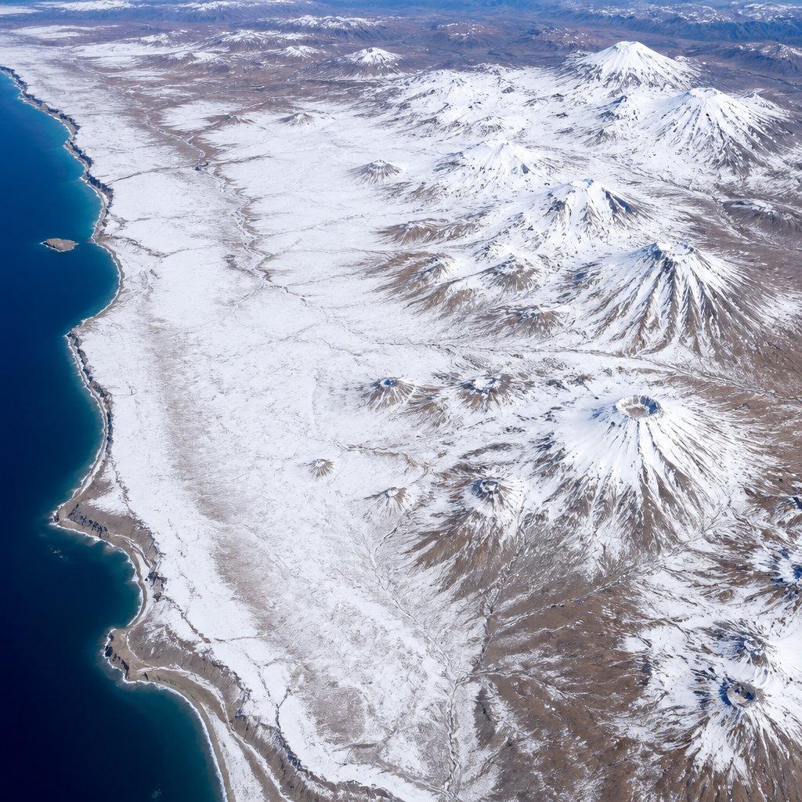
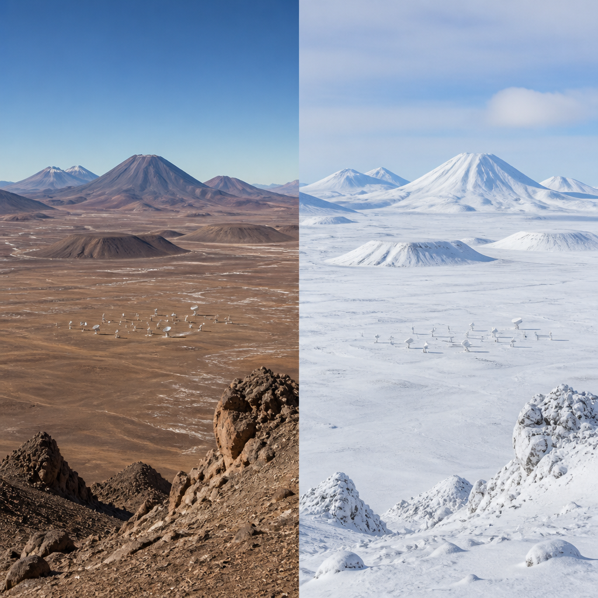

Due perturbazioni invernali hanno portato neve dalle Ande fino alle vicinanze della costa pacifica del Cile settentrionale.
Nell’agosto 2026, due tempeste invernali ravvicinate hanno lasciato parti del deserto di Atacama, nel Cile settentrionale, sotto una rara coltre di neve. La neve è comparsa in un territorio di solito arido e ha raggiunto un’estensione insolita: dalle Ande fino alle zone prossime alla costa dell’oceano Pacifico. Il deserto aveva già ricevuto nevicate, in particolare nel 2025 e, prima ancora, nel 2011. Uno degli eventi del 2026 si è però distinto per l’ampiezza dell’area interessata.
Le immagini raccolte dallo spazio permettono di osservare con chiarezza questa trasformazione. I satelliti NASA-USGS Landsat 8 e Landsat 9 hanno ripreso il territorio prima e dopo un periodo di maltempo intenso: un’immagine del 6 agosto mostra un altopiano prevalentemente bruno e asciutto, mentre quella del 14 agosto mostra lo stesso paesaggio ricoperto di bianco. Le riprese si concentrano sull’altopiano di Chajnantor, all’interno del complesso vulcanico Altiplano-Puna.
Chajnantor è circondato da stratovulcani e duomi lavici. Uno stratovulcano è un vulcano dalla struttura formata dall’accumulo di materiali eruttivi; un duomo lavico è invece un rilievo creato da lava molto viscosa. Prima della nevicata, sull’altopiano si distingueva una zona di marrone più chiaro che indicava l’area dell’Atacama Large Millimeter/submillimeter Array, noto come ALMA, uno dei più potenti radiotelescopi del pianeta. Dopo la tempesta, la neve rendeva quella posizione quasi indistinguibile dal terreno circostante.
Con l’arrivo della neve e dei venti forti, ALMA ha sospeso le osservazioni e ha portato le proprie antenne in una modalità protettiva di sopravvivenza. Anche altri grandi osservatori astronomici presenti nella fascia costiera hanno interrotto le attività durante l’evento.

Nella seconda metà del mese, un’altra perturbazione ha depositato neve fresca su un’area ancora più ampia. Il sensore MODIS del satellite Terra della NASA ha acquisito un’immagine il 19 agosto. MODIS è uno strumento che osserva la Terra a risoluzione moderata, utile per seguire fenomeni distribuiti su vaste regioni. Nella ripresa, la neve si estende verso ovest dalle Ande, attraversa il nucleo iper-arido del deserto e arriva vicino alla costa pacifica, a sud della città portuale cilena di Antofagasta.
La maggior parte delle precipitazioni invernali della regione è associata a minimi isolati: sistemi di bassa pressione che si separano dalla corrente a getto e possono occasionalmente raggiungere il Cile settentrionale. Anche la tempesta della seconda parte di agosto 2026 è stata legata a un minimo isolato, ma in questo caso il sistema si è staccato da una saccatura insolitamente grande. Una saccatura è un’area allungata di pressione atmosferica relativamente bassa. Quella descritta dalla fonte si estendeva dalla punta del Sud America fino alle zone subtropicali.
Questa configurazione atmosferica, insieme a un’abbondante umidità proveniente dalla costa, ha prodotto precipitazioni su una fascia molto ampia: al largo, lungo la costa, nel cuore dell’Atacama e sulle Ande. Non ovunque le precipitazioni sono cadute sotto forma di neve. A Taltal, sulla costa settentrionale cilena, in tre giorni sono caduti quasi 40 millimetri di pioggia, circa dieci volte la media annuale indicata nella fonte.
L’abbondanza di pioggia e neve ha avuto conseguenze anche gravi in alcune aree del Cile settentrionale. Sono stati segnalati flussi di fango distruttivi e alluvioni improvvise. Il Servizio nazionale di prevenzione e risposta ai disastri ha riferito che migliaia di persone sono state coinvolte e che centinaia di abitazioni hanno riportato danni importanti.
Secondo René Garreaud, scienziato dell’atmosfera dell’Università del Cile, il rafforzamento di El Niño costituisce lo sfondo dell’inverno insolitamente umido nel Cile centro-settentrionale. Durante El Niño, l’alta pressione subtropicale del Pacifico, che normalmente contribuisce a mantenere secca la regione, si indebolisce. Nello stesso tempo, tende a formarsi un’alta pressione di blocco nel Pacifico meridionale vicino alla punta del continente. Insieme, questi cambiamenti spingono la traiettoria delle tempeste dell’emisfero australe verso l’equatore.
Ad agosto 2026, tempeste invernali consecutive hanno portato una rara neve nel deserto di Atacama. Le immagini di Landsat 8, Landsat 9 e Terra mostrano il passaggio da paesaggi asciutti a vaste superfici bianche, dalle Ande fino alle vicinanze della costa. Le precipitazioni, legate a un minimo isolato e a una grande saccatura atmosferica, hanno causato anche piogge intense, flussi di fango e alluvioni improvvise in parti del Cile settentrionale.
Questo articolo l'hai letto sul blog di Meteo Radar: un'app che ti mostra da dove vengono i numeri, invece di limitarsi a dartelo. E ogni mattina ne trovi uno nuovo come questo.